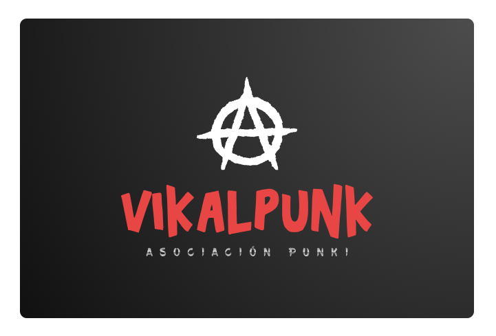
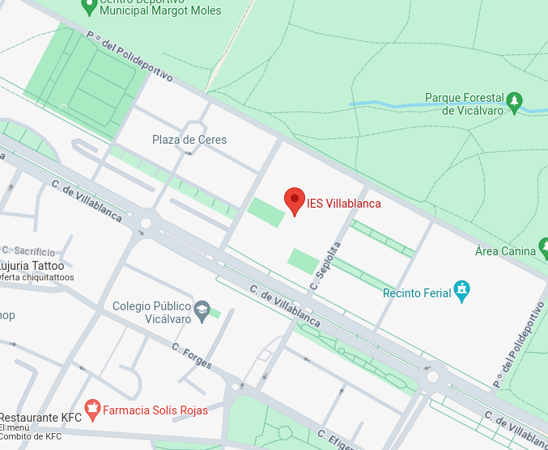
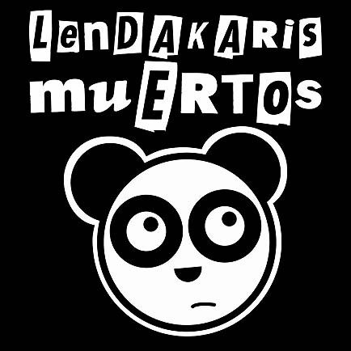
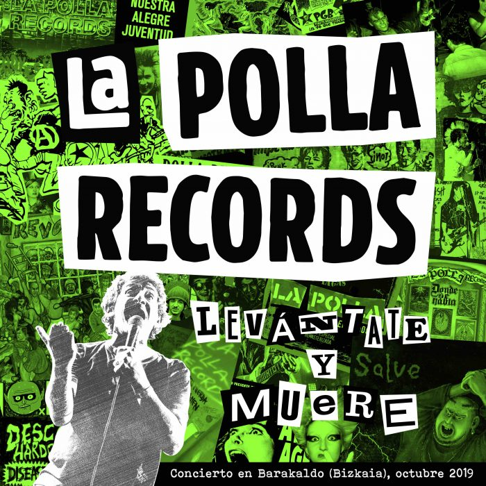
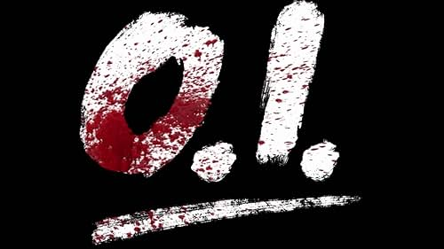
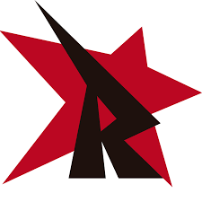

Contacto

Inicio
Quienes somos
Registro
Conoce Grupos
Actividades
Contacto
El correo de nuestra asociación es
villablanca@educa.madrid.org
aquí podrás esribirnos para alguna sugerencia, duda o actuación que tengas en mente.

Aquí está la asociación, a continuación te explicamos cómo puedes llegar
Transporte Publico
Podemos llegar con el metro, en la parada Metro Puerta de Arganda
Podemos llegar con las líneas de autobuses 4, 106, 159, 100, 287, E3 y E5.
Finalmente también podemos llegar con el tren, C7 y C2
Contamos con la colaboración de
   